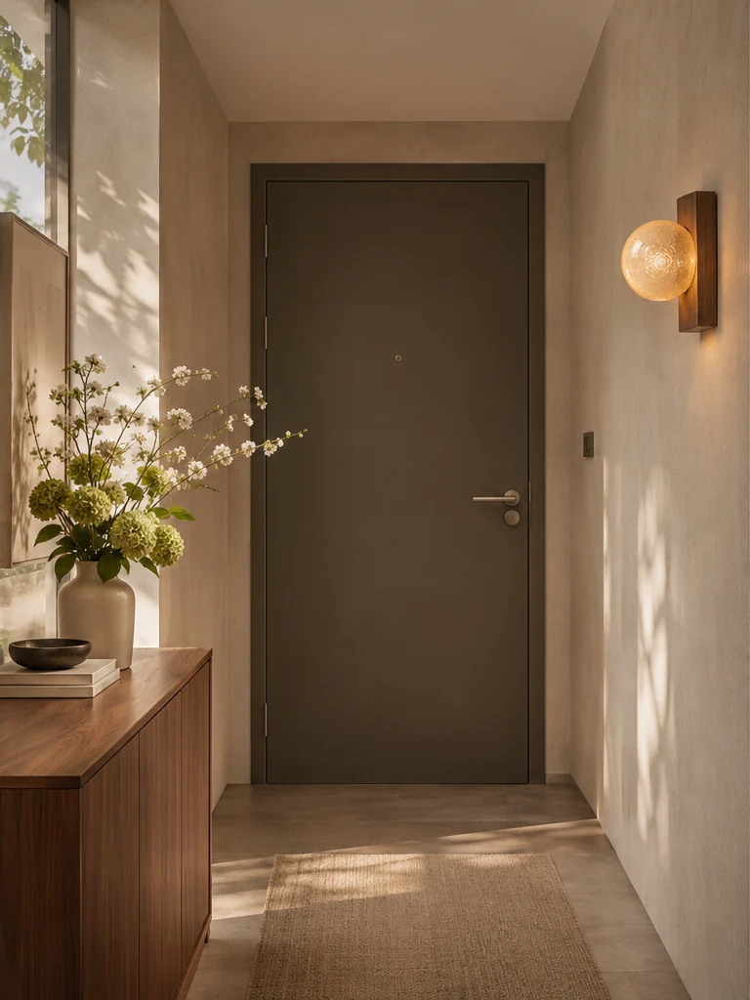
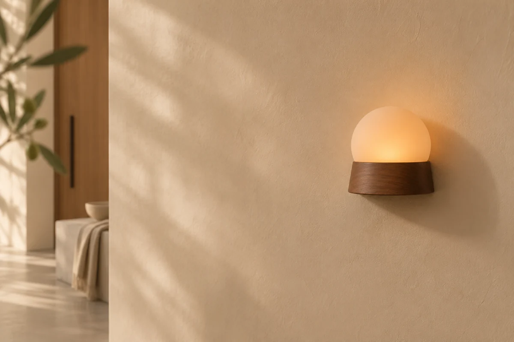
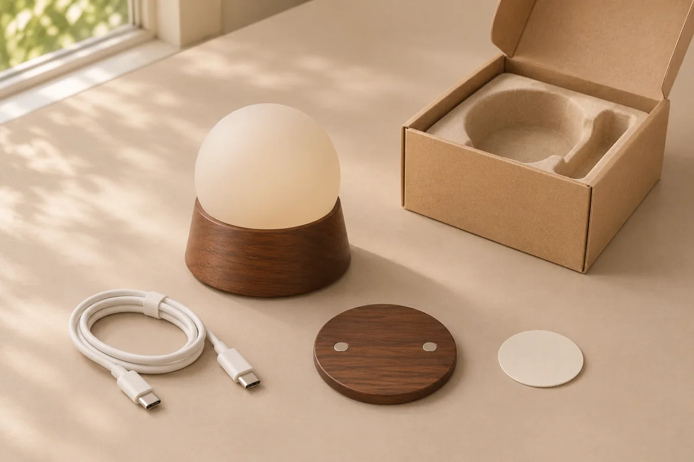
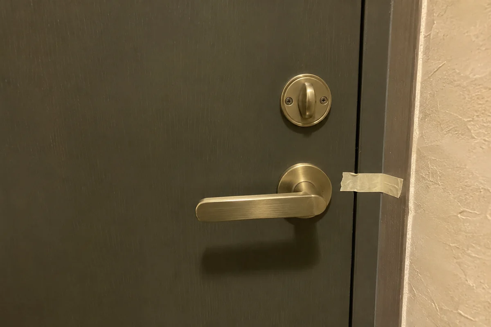
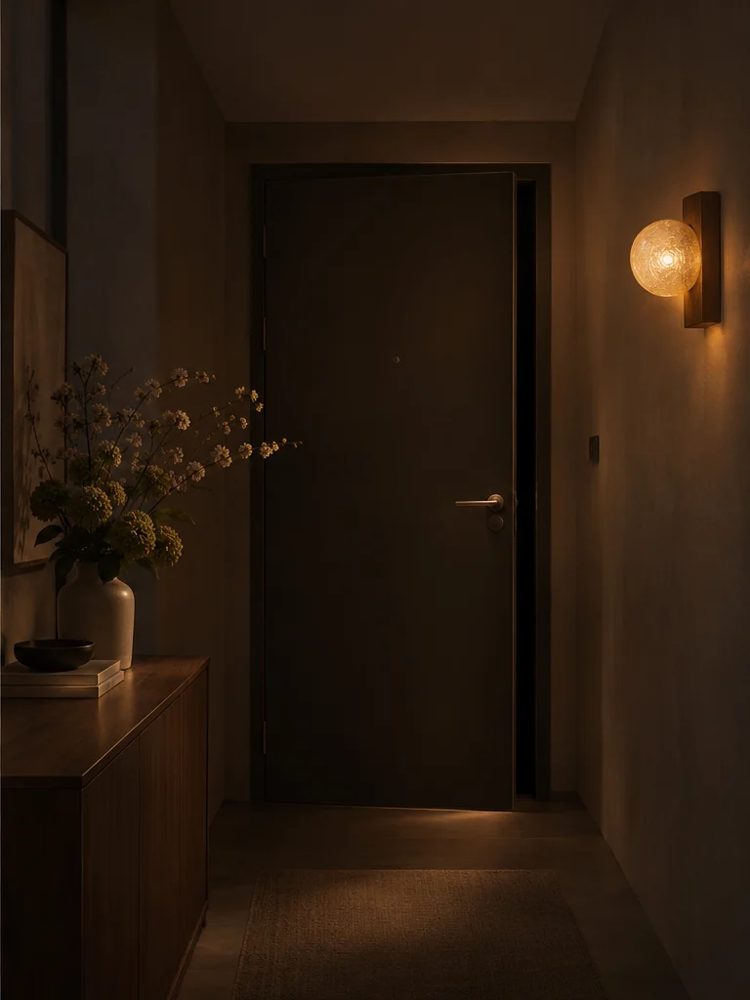
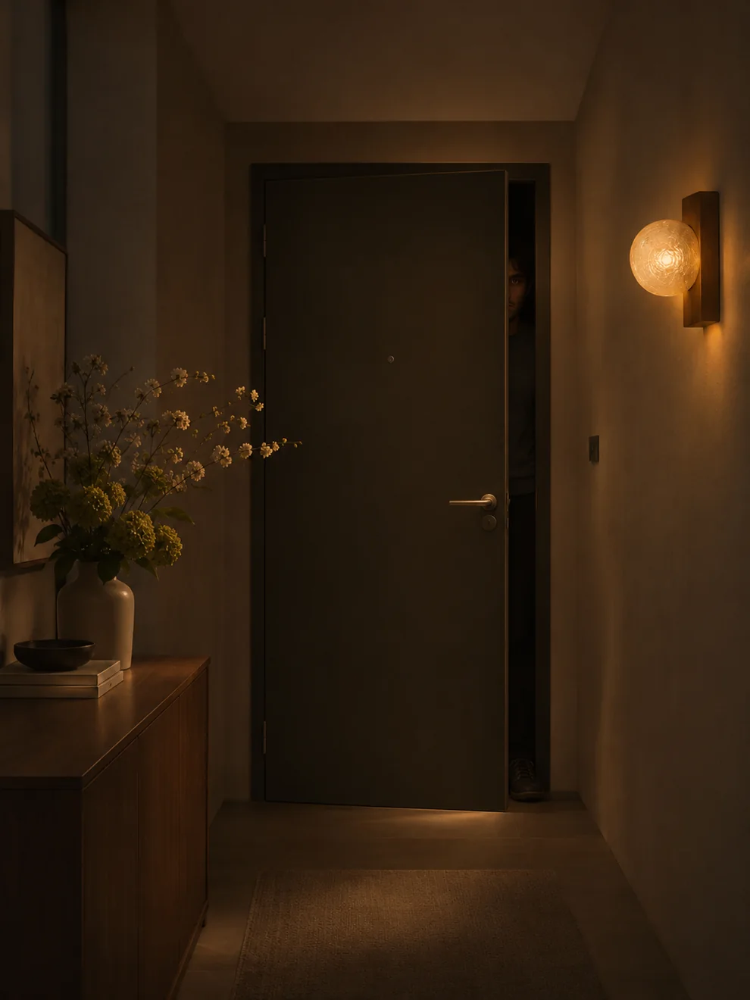

7 天在家试用
从签收开始算 7 天。在家走一遍平常的动线，再决定灯装在门边还是走廊。
归昼 L1 / 无线玄关感应灯
钥匙还没找到，灯已经亮了。无需布线的暖光感应灯，让你进门的第一步，从容一点。

玄关光线示意
L1 / WARM WALNUT产品设计
磨砂灯罩把光铺在墙面上，半夜开门也不刺眼。灯体用磁吸固定，拿下来充电，装回去就能继续用。
首次安装
晚上安装好以后，照平常的方式开门、放钥匙，最后走进客厅。看一看灯是不是刚好亮到你走完这段路。
在门边挑一块平整的墙面，把底座固定在伸手够得到的高度。
关掉顶灯，从门口走向客厅。动作信号只覆盖玄关一带。
玄关空下来以后，L1 会自动熄灯。可以重复一遍，确认这个位置合适。
使用场景
切换模式，看看同一个玄关在不同光线下的效果。
环境光充足时，经过玄关也无需亮灯。
| 使用方式 | 手动顶灯 | 常亮插座灯 | 归昼 L1 |
|---|---|---|---|
| 开灯 | 墙面开关 | 通电后常亮 | 暗处感应亮起 |
| 位置 | 天花板 | 靠近插座 | 门边或走廊墙面 |
| 熄灯 | 手动关灯 | 关掉电源 | 无人后约 20 秒 |
首批住户体验
「入户太窄，原来的顶灯一开整层楼都知道我回来了。现在这点亮度正合适。」
「我上夜班。家人不用开着客厅灯等我了。」
「我一个人住。头几天以为感应太灵，门关了好久，灯还是亮着。」
选购归昼 L1
暖胡桃木 · 磁吸底座 · USB-C 充电

产品支持
关上前门，再到客厅等一会儿。如果灯一直亮着，可以先排查这几种情况。
关门后还有人站在约 3 米的感应范围内，延时会重新计时。最后一人离开后，灯会在 20 秒内熄灭。
有可能。让机器人在充电座上停一晚，再看看同一时间是否还会触发。
看一下两条记录之间隔了多久。如果你走出玄关后才出现第二条，可以把这个间隔告诉售后。
售后回访 / L1-047
同一位住户连续三晚测到七秒。他把安装那天走过的路线又走了一遍。
客服请他暂停扫地机器人。第二次亮灯仍然出现。
住户在客厅看到灯亮起，随后听见玄关地垫响了一声。那块地垫卷了边，踩上去会擦过门底。
他反锁前门，在门缝上贴了一条纸胶带。手机架在走廊口，镜头对着门。他留在客厅跟客服通话。
复测 / 灯体感应记录
住户刚走出感应范围，玄关里就有另一个信号接了上来。

住户提供的照片
纸胶带横着贴在门和门框之间。两端都压平了。
手机录下的第一声很轻。像是胶带从墙上揭起来的声音。
手机录像 / 截帧
住户后来回看录像，才发现门往屋里开了一点。门把手一直是平的。


00:00 / 灯光感应中